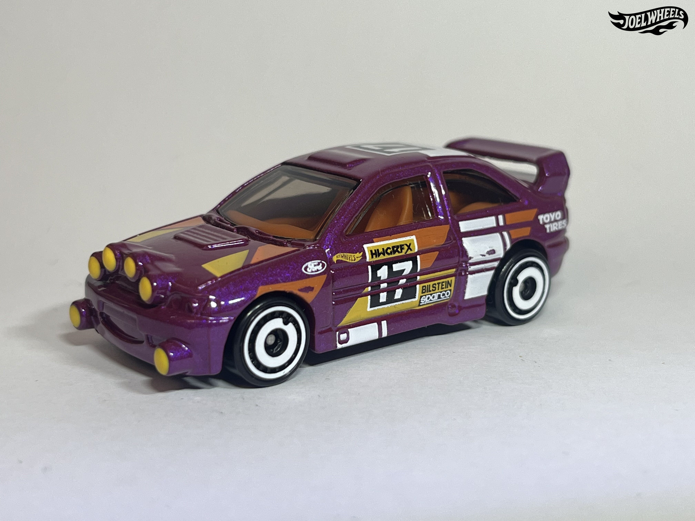
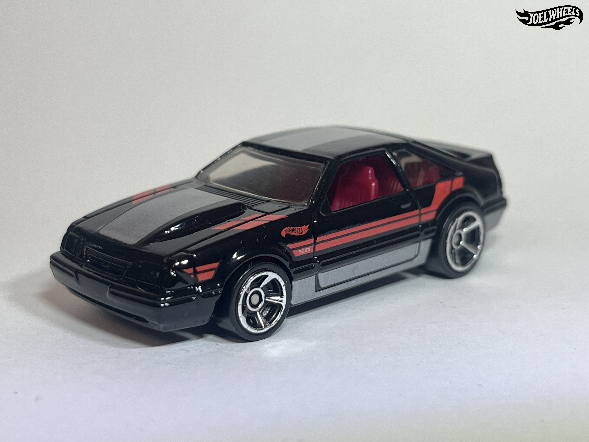
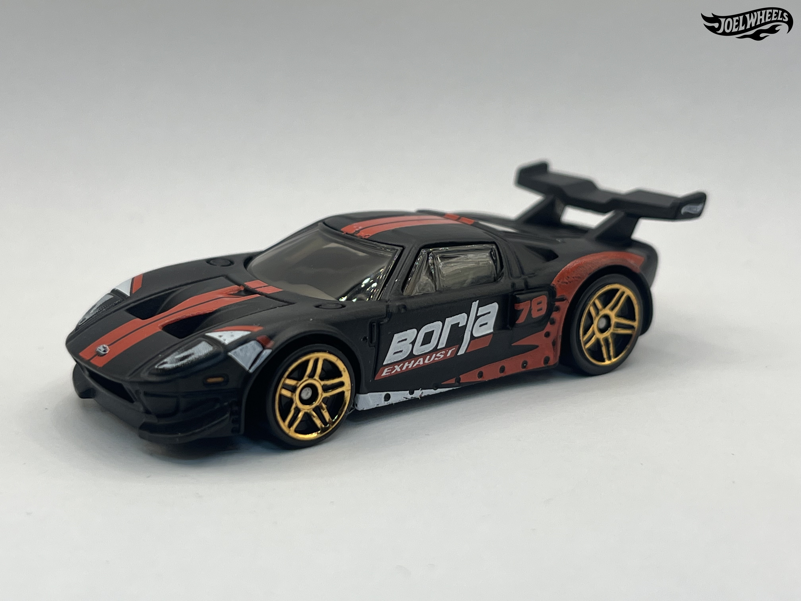
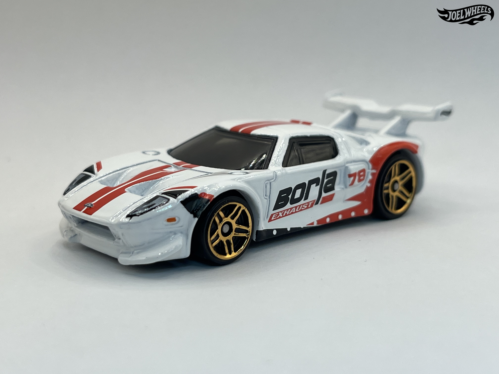
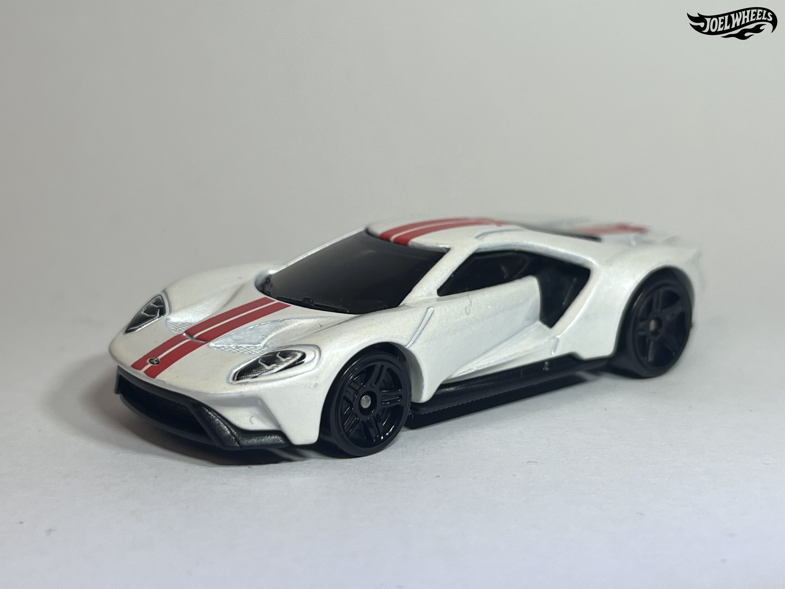
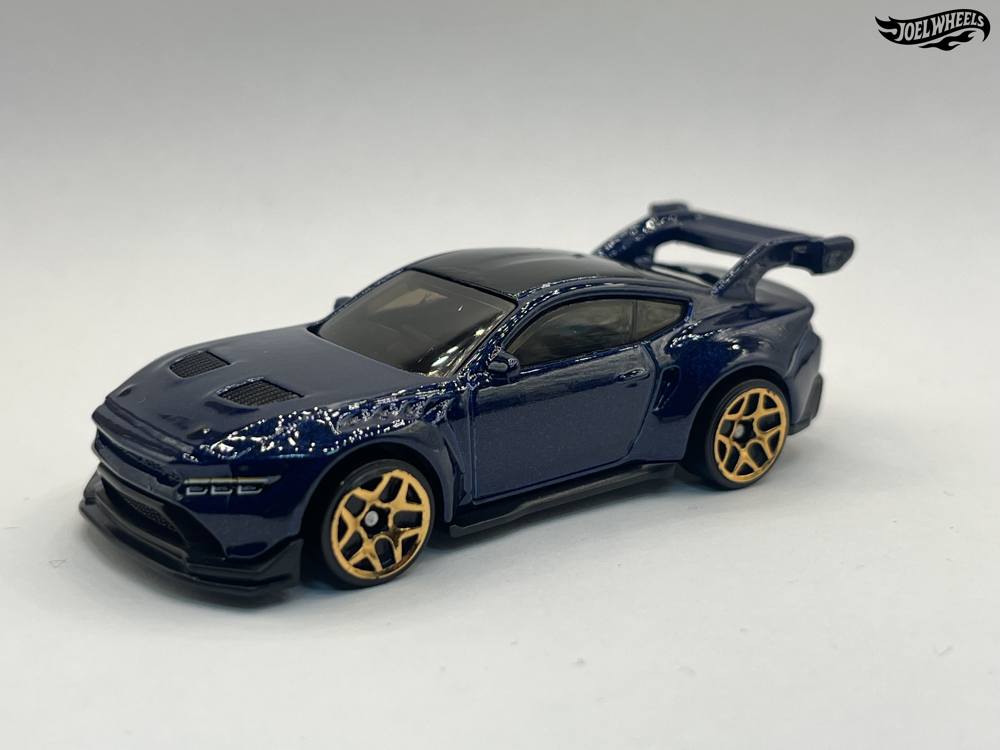
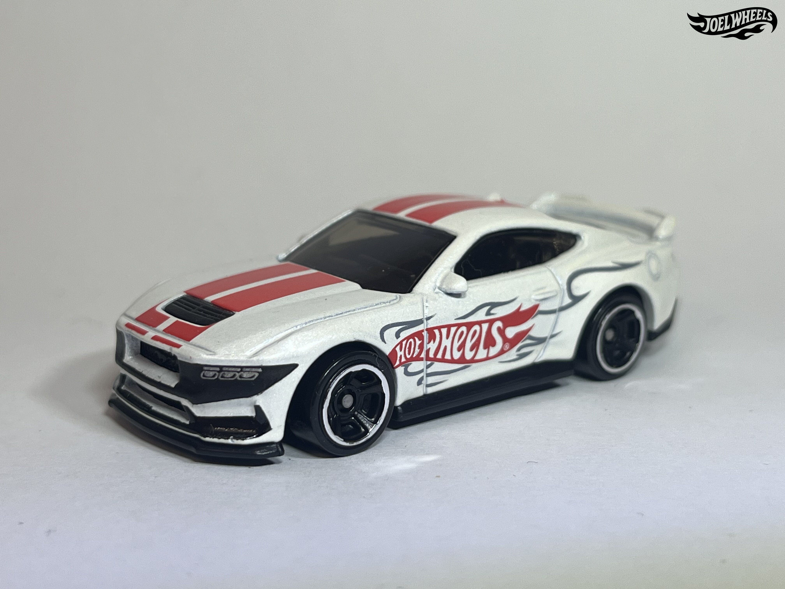
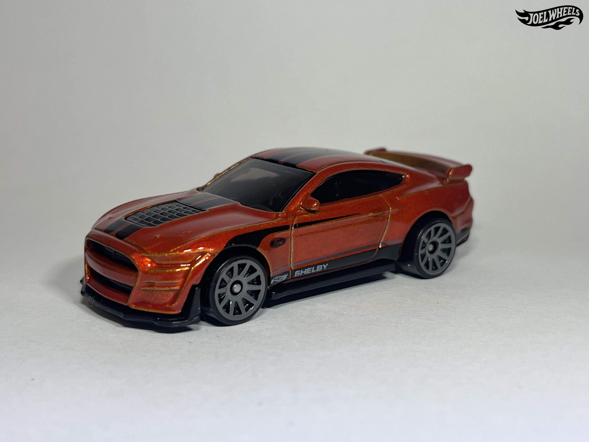
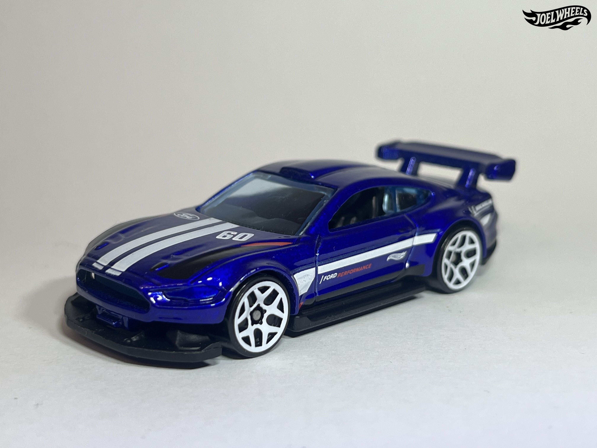

FORD ESCORT RS 2000
2026 - RALLY RACERS - 3/5
The Ford Escort is a small family car manufactured by Ford of Europe from 1968 to 2000. Frequently the best selling car in the United Kingdom, the Escort was also used for motorsports, especially rallying to great success. Many drivers such as Björn Waldegård, Hannu Mikkola and Ari Vatanen used Escorts and won numerous races with them.
This casting depicts a Ford Escort Mk II with various "Series-X" performance parts fitted; the parts themselves were colloquially known as "X-Packs".

FORD MUSTANG GTD
2026 - FACTORY FRESH - 43/250
The Ford Mustang GTD is a high-performance version of the seventh-generation Ford Mustang introduced for the 2025 model year. Designed by Anthony Colard, Stavros Melabiotis and Omead Dorandish, the Mustang GTD is a road-going version of the Ford Mustang GT3 race car. The car uses the 5.2L Ford Predator supercharged V8 from the 2020 Ford Shelby GT500; priced at $325,000 per car, it is expected to be a limited production vehicle.

'17 FORD GT
2021 - THEN AND NOW - 164/250
The Ford GT is a limited-production high-performance sports car produced by the Ford Motor Company over two generations. Styled by Chris Svensson, the second generation of the Ford GT was unveiled at the 2015 North American International Auto Show, alongside the video game Forza Motorsport 6. Powered by a 3.5L EcoBoost D35 twin-turbocharged V6 producing 647 horsepower mated to a 7-speed Getrag 7DCL750 dual clutch, development of the car was highly secretive, with only some twelve people allowed access to Ford's design studio. Initially planned to be produced from 2016 to 2020 at Multimatic in Canada, the car received technical upgrades in 2020, including a power boost to 660 horsepower; it also received a two year production extension, with the last cars produced in 2022 along with a number of special editions to send off the model. 1,250 were produced; the cars were hand-built at a rate of one car a day and a maximum of 250 a year.

'17 FORD GT
2025 - HW MOTOR SHOW 5-PACK
The Ford GT is a limited-production high-performance sports car produced by the Ford Motor Company over two generations. Styled by Chris Svensson, the second generation of the Ford GT was unveiled at the 2015 North American International Auto Show, alongside the video game Forza Motorsport 6. Powered by a 3.5L EcoBoost D35 twin-turbocharged V6 producing 647 horsepower mated to a 7-speed Getrag 7DCL750 dual clutch, development of the car was highly secretive, with only some twelve people allowed access to Ford's design studio. Initially planned to be produced from 2016 to 2020 at Multimatic in Canada, the car received technical upgrades in 2020, including a power boost to 660 horsepower; it also received a two year production extension, with the last cars produced in 2022 along with a number of special editions to send off the model. 1,250 were produced; the cars were hand-built at a rate of one car a day and a maximum of 250 a year.

FORD PERFORMANCE SUPERVAN 4
2024 - HW GREEN SPEED - 128/250
The Ford SuperVan 4, officially known as the Ford Pro Electric SuperVan, is a high-performance all-electric racing van developed by Ford Europe, based on the Ford Transit Custom. Designed by Levent Tuna and Ernesto Rupar of Ford of Europe's design studio, the SuperVan 4 is the first all-electric version of the Ford SuperVan, featuring four electric motors producing some 1,972 horsepower. It was upgraded into the SuperVan 4.2 in 2024 for an attempt at the Pikes Peak Hill Climb.
The base of the casting reads Ford Supervan4.

FORD MUSTANG DARK HORSE
2024 - THEN AND NOW - 250/250
The Ford Mustang Dark Horse is a high-performance version of the S650 Ford Mustang. Designed by Chris Stevens, the Dark Horse was designed more for track performance, filling a niche similar to the previous Boss 302 and GT350 models, being intended to slot into that niche. It is powered by a 5.0L Coyote V8, modified with forged pistons and a unique crankshaft design, mated to a 6-speed Tremec TR-3160 manual; the engine produces 500 horsepower.

CUSTOM FORD MAVERICK
2024 - VINTAGE RACING CLUB - 4/5
This custom 1972 Ford Maverick is based on a real car created in 2016 by Sung Kang, who previously built the Datsun Fugu-Z (another Hot Wheels model). Originally titled "Project Underdog" or "UDog", the restomod Maverick was designed and built at SEMA Garage with Pennzoil sponsorship and the help of three Los Angeles area high school students (symbolized by the "U3" logo seen on the sides and rear). Contrary to the Hot Wheels card text, the UDog has a 2.3L four-cylinder Ford EcoBoost engine (from the 2015 Mustang) boosted with a GReddy turbocharger supplying nearly 400 horsepower to the 6-speed manual transmission (also borrowed from the Mustang). The car features a Rocket Bunny custom body kit, a Grabber-style carbon-fiber hood, and subtle cues from the Brazilian Mavericks built in the late '70s.

'87 Ford Sierra Cosworth
2023 - HW: THE '80S - 2/250
The Ford Sierra was a large family car designed by Uwe Bahnsen, Bob Lutz and Patrick le Quément. The car was intended to replace the Ford Cortina and Taunus lines. The RS Cosworth was a high-performance version of the Ford Sierra, fitted with a 2.0L turbocharged Cosworth inline-4. This casting depicts an Sierra RS500 Cosworth, the most powerful version with a further refined engine, made in a limited series of 500 examples and campaigned in many Group A racing and rally series from 1987 on. It can be distinguished from the regular RS Cosworth by the indent below the grille which opens an extra air intake not found on the regular RS and the lower lip spoiler below the large 'whale-tail' wing which the regular RS lacks.

'87 Ford Sierra Cosworth
2022 - RETRO RACERS - 33/250
The Ford Sierra was a large family car designed by Uwe Bahnsen, Bob Lutz and Patrick le Quément. The car was intended to replace the Ford Cortina and Taunus lines. The RS Cosworth was a high-performance version of the Ford Sierra, fitted with a 2.0L turbocharged Cosworth inline-4. This casting depicts an Sierra RS500 Cosworth, the most powerful version with a further refined engine, made in a limited series of 500 examples and campaigned in many Group A racing and rally series from 1987 on. It can be distinguished from the regular RS Cosworth by the indent below the grille which opens an extra air intake not found on the regular RS and the lower lip spoiler below the large 'whale-tail' wing which the regular RS lacks.

'67 Ford GT40 Mk.IV
2022 - RETRO RACERS - 58/250
The Ford Mk.IV was the final iteration of the Ford GT40. The car only competed in two races, the 12h of Sebring and the 24h of Le Mans, both in 1967; the car won both races. The GT40 Mk.IV was also notable as being the only version of the GT40 which was designed and built in the United States (the Mk I to III were built in the United Kingdom), with a total of six built by Kar Kraft.
The initial livery of the GT40 Mk.IV casting resembles that of the livery of the real car which won the 1967 24h of Le Mans driven by Dan Gurney and A.J. Foyt; the graphics of this release were done by Leeway Chang. This casting could be seen as a successor casting of sorts to the original Redline Ford Mark IV from 1969.

'17 Ford F-150 Raptor
2025 - HW DIRT - 178/250
With its performance-tuned suspension system, advanced-off road technology and increased horsepower. The 2017 Ford F-150 Raptor can take on any off-road adventure with style.

FORD ESCORT
2025 - COMPACT KINGS - 113/250
The Ford Escort RS2000 Maxi is a special homologation version of the Ford Escort intended for use in the FIA 2-Liter World Rally Cup. Originally introduced in 1992, the Escort was introduced into the 2-Liter World Rally Cup in 1996; compared to its more famous brother the Escort RS Cosworth which competed in Group A, the RS2000 was a front-wheel drive car powered by a 2.0L N7A inline-4. Result for the series are hard to come by but the car is known to have won at least one race in the series. It was raced until 1999 when the championship folded due to high costs and replaced with the Super 1600 category.
This casting incorporates some design elements from the Group A RS Cosworth model, such as the headlight configuration as well as the four fog lights in front.

'12 FORD FIESTA
2026 - COMPACT KINGS - 1/5
The Ford Fiesta RS WRC is a rally car built for the Ford World Rally Team and other privateer teams for World Rally Car regulations. Manufactured by M-Sport, the Fiesta RS WRC acts as the replacement for the Focus RS WRC and is largely based on the road-going Fiesta. The car is powered by a Pipo Moteurs-built 1.6L EcoBoost inline-4, mated to a 6-speed semi-automatic. An additional version was introduced in 2013 to comply with the FIA's Regional Rally Car regulations; the car can be converted back and forth between WRC and RRC specifications. The Fiesta RS WRC was replaced with the Fiesta WRC for 2017 and beyond.
This model replicates a Fiesta RS WRC driven by American rally driver and Internet personality Ken Block for a number of his Gymkhana videos. The car was auctioned off in December 2022 by RM Sotheby's for $252,000.

'70 FORD ESCORT RS1600
2025 - ULTRA HOTS - 1/8
The first generation Ford Escort was designed in Great Britain as a replacement for the aging Ford Anglia, and was a major breakthrough for the company in European and Asia-Pacific Markets. The Ford Escort has been built in several countries in Europe, plus Australia, New Zealand and Taiwan. The Hot Wheels casting depicts a rally car based on the two-door saloon body in right-hand drive.

FORD MUSTANG GTD
2025 - MUSTANG 60TH - 34/250
The Ford Mustang GTD is a high-performance version of the seventh-generation Ford Mustang introduced for the 2025 model year. Designed by Anthony Colard, Stavros Melabiotis and Omead Dorandish, the Mustang GTD is a road-going version of the Ford Mustang GT3 race car. The car uses the 5.2L Ford Predator supercharged V8 from the 2020 Ford Shelby GT500; priced at $325,000 per car, it is expected to be a limited production vehicle.

FORD RS200
2025 - PEAK PURSUIT - 247/250
The Ford RS200 is a homologation special two-door all-wheel drive sports car designed by Ford Europe to comply with FIA Homologation Regulations, as the RS200 was used as a rally car in Group B in the FIA World Rally Championship which required road car versions to be produced. The initial release of the RS200 has a livery based on that of the RS200s entered by Ford Motor Co. Ltd. in the 1986 World Rally Championship.

2020 Ford Mustang Shelby GT500
2026 - NIGHTSPEED - 10/250
The 2020 Ford Mustang Shelby GT500 is touted as being the fastest Mustang of all time, with a 5.2L supercharged Predator cross-plane crank V8 producing 760 horsepower.

Ford Mustang Mach-E 1400
2026 - HW EV - 8/250
The Ford Mustang Mach-E 1400 is a heavily modified Ford Mustang Mach-E intended as a technology demonstrator. The car was developed as a result of a collaboration between Ford and RTR Performance. The car is able to produce some 1400 BHP from its seven motors.
'69 FORD MUSTANG BOSS 302
2025 - MUSTANG 60 YEARS - 2/5
This casting is a depiction of a 1969 Ford Mustang intended for Trans Am racing. This casting, while very similar in appearance to the '70 Ford Mustang Boss 302, is a different casting and is not to be confused with it; it is likely that this casting was modified from the earlier '70 Ford Mustang casting hence their similar outward appearance. Due to their similar appearance parts from one casting can be switched with another.
The casting has undergone two retools over the course of its life. In 2015, the casting lost its metal base and plastic spoiler, the latter being integrated into the body. The casting went through a further retool in 2019 where the front grill and rear panel were made part of the base.
FORD ESCORT RS 2000
2024 - FACTORY FRESH - 23/250
The Ford Escort is a small family car manufactured by Ford of Europe from 1968 to 2000. Frequently the best selling car in the United Kingdom, the Escort was also used for motorsports, especially rallying to great success. Many drivers such as Björn Waldegård, Hannu Mikkola and Ari Vatanen used Escorts and won numerous races with them.
This casting depicts a Ford Escort Mk II with various "Series-X" performance parts fitted; the parts themselves were colloquially known as "X-Packs".

FORD ESCORT
2025 - COMPACT KINGS - 113/250
The Ford Escort RS2000 Maxi is a special homologation version of the Ford Escort intended for use in the FIA 2-Liter World Rally Cup. Originally introduced in 1992, the Escort was introduced into the 2-Liter World Rally Cup in 1996; compared to its more famous brother the Escort RS Cosworth which competed in Group A, the RS2000 was a front-wheel drive car powered by a 2.0L N7A inline-4. Result for the series are hard to come by but the car is known to have won at least one race in the series. It was raced until 1999 when the championship folded due to high costs and replaced with the Super 1600 category.
This casting incorporates some design elements from the Group A RS Cosworth model, such as the headlight configuration as well as the four fog lights in front.

'92 FORD MUSTANG
2024 - HW: THE ´90s - 194/250
The '92 Ford Mustang Casting was created by Hot Wheels designer Jun Imai for the Modern Classics Series. It resembles a Mustang owned by Alec Tam when he joined the Hot Wheels Team. The Mustang was later sold to designer Fraser Campbell. The Mustang featured the same paint and graphics as the one Imai created for the Modern Classics.

'92 FORD MUSTANG
2025 - HW: ´70s vs ´90s - 127/250
The '92 Ford Mustang Casting was created by Hot Wheels designer Jun Imai for the Modern Classics Series. It resembles a Mustang owned by Alec Tam when he joined the Hot Wheels Team. The Mustang was later sold to designer Fraser Campbell. The Mustang featured the same paint and graphics as the one Imai created for the Modern Classics.

FORD GT-40
2024 - FACTORY FRESH - 12/250
The Ford GT-40 is a Hot Wheels casting which debuted in the 1999 First Editions Series. It is based on the MkI version and was designed by Phil Riehlman. It has been used numerous times since its conception.
The real-life Ford GT-40 MkII upgraded to the 427ci V8 from the 255ci of the MkI, and featured a 4-speed gearbox built by Kar Kraft. The MkII GT-40 raced very successfully at endurance championships and notably dominated the 1966 24 Hours of Le Mans in a 1-2-3 victory.
The tooling for the car was completely updated in 2019; it features an improved interior piece and now features a post-post construction as opposed to post-tab construction. Versions assembled in Thailand or Indonesia retain the older post-tab design.
2016 FORD GT RACE
2024 - THEN AND NOW - 229/250
The Ford GT LM GTE is a grand touring racing car built by Multimatic for Ford Performance for use in endurance racing. Styled by Chris Svensson and based on the Ford GT road car, the car marked Ford's official return to endurance racing. The car is powered by a 3.5L Ford EcoBoost D35 twin-turbocharged V6 mated to a Ricardo 6-speed sequential; it competed in both the IMSA SportsCar Championship and the World Endurance Championship as a GTE/GTLM homologated vehicle. The car's most notable victory was at the 2016 24 Hours of Le Mans, fifty years after Ford's first victory at the race, with the #66 car driven by Joey Hand, Dirk Müller and Sebastién Bourdais taking victory; the car also won the 2018 Constructors' Championship in the 2018 IMSA SportsCar Championship. Ford wound down their GT LM GTE program after 2019, capping off the year with a final victory by a privately-entered car by Keating Motorsports at the 2019 24 Hours of Le Mans, although the win was later rescinded due to the car exceeding fuel capacity limits during post-race inspection. Eight chassis were built.

FORD GT
2025 - MODIFIED - 159/250
The Ford GT GT1 (also known as the Ford GT1) is a grand touring race car built by Matech Concepts in compliance with GT1 racing regulations. Powered by a 5.3L "Cammer" V8, the GT GT1 was raced by Matech Competition and the Marc VDS Racing Team in the FIA GT1 World Championship, with four chassis split evenly between both teams. The GT GT1 saw some success in the series, winning a number of races; in 2011, Matech Concepts had folded and the two cars fielded by them were sold off to Belgium Racing. Three of the GT GT1s also competed in the 2010 24 Hours of Le Mans, two were run by Marc VDS and one by Matech; all three retired at various stages within the race. A GT3 version known as the Ford GT GT3 was also developed for GT3 competition.
This casting features a different rear wing compared to its real life counterpart. The casting was retooled in 2015 to have the rear wing cast into the body; the original tooling with the plastic wing is still used on occasion. Originally named Ford GT LM, the name remains cast into the base of the model.

FORD GT
2025 - HW MODIFIED - 156/250
The Ford GT GT1 (also known as the Ford GT1) is a grand touring race car built by Matech Concepts in compliance with GT1 racing regulations. Powered by a 5.3L "Cammer" V8, the GT GT1 was raced by Matech Competition and the Marc VDS Racing Team in the FIA GT1 World Championship, with four chassis split evenly between both teams. The GT GT1 saw some success in the series, winning a number of races; in 2011, Matech Concepts had folded and the two cars fielded by them were sold off to Belgium Racing. Three of the GT GT1s also competed in the 2010 24 Hours of Le Mans, two were run by Marc VDS and one by Matech; all three retired at various stages within the race. A GT3 version known as the Ford GT GT3 was also developed for GT3 competition.
This casting features a different rear wing compared to its real life counterpart. The casting was retooled in 2015 to have the rear wing cast into the body; the original tooling with the plastic wing is still used on occasion. Originally named Ford GT LM, the name remains cast into the base of the model.

'17 FORD GT
2024 - HW EXOTICS - 240/250
The Ford GT is a limited-production high-performance sports car produced by the Ford Motor Company over two generations. Styled by Chris Svensson, the second generation of the Ford GT was unveiled at the 2015 North American International Auto Show, alongside the video game Forza Motorsport 6. Powered by a 3.5L EcoBoost D35 twin-turbocharged V6 producing 647 horsepower mated to a 7-speed Getrag 7DCL750 dual clutch, development of the car was highly secretive, with only some twelve people allowed access to Ford's design studio. Initially planned to be produced from 2016 to 2020 at Multimatic in Canada, the car received technical upgrades in 2020, including a power boost to 660 horsepower; it also received a two year production extension, with the last cars produced in 2022 along with a number of special editions to send off the model. 1,250 were produced; the cars were hand-built at a rate of one car a day and a maximum of 250 a year.

FORD MUSTANG GTD
2025 - MUSTANG 60TH - 34/250
The Ford Mustang GTD is a high-performance version of the seventh-generation Ford Mustang introduced for the 2025 model year. Designed by Anthony Colard, Stavros Melabiotis and Omead Dorandish, the Mustang GTD is a road-going version of the Ford Mustang GT3 race car. The car uses the 5.2L Ford Predator supercharged V8 from the 2020 Ford Shelby GT500; priced at $325,000 per car, it is expected to be a limited production vehicle.

FORD MUSTANG DARK HORSE
2025 - THEN AND NOW - 219/250
The Ford Mustang Dark Horse is a high-performance version of the S650 Ford Mustang. Designed by Chris Stevens, the Dark Horse was designed more for track performance, filling a niche similar to the previous Boss 302 and GT350 models, being intended to slot into that niche. It is powered by a 5.0L Coyote V8, modified with forged pistons and a unique crankshaft design, mated to a 6-speed Tremec TR-3160 manual; the engine produces 500 horsepower.

2020 FORD MUSTANG SHELBY GT500
2025 - MUSTANG 60TH - 73/250
The 2020 Ford Mustang Shelby GT500 is touted as being the fastest Mustang of all time, with a 5.2L supercharged Predator cross-plane crank V8 producing 760 horsepower.
'20 Ford Shelby GT500 is written on the base.

CUSTOM '18 FORD MUSTANG GT
2025 - MUSTANG 60TH - 211/250
This is a modified version of the 2018 Ford Mustang GT, featuring a custom bodykit and wing and "flip lip" adjustable splitter.
'99 FORD F-150 SVT LIGHTNING
2025 - HOT TRUCKS - 94/250
The '99 Ford F-150 SVT Lightning is a high performance truck derived from the regular F-150 offered in a flare side pickup configuration by the Ford Motor Company, produced from 1999 to 2004.
While very similar in appearance to the Ford F-150 SVT Lightning, both are two different castings done by different designers; the mainline casting is slightly shorter than the premium.
The base of the casting reads F-150 SVT Lightning.